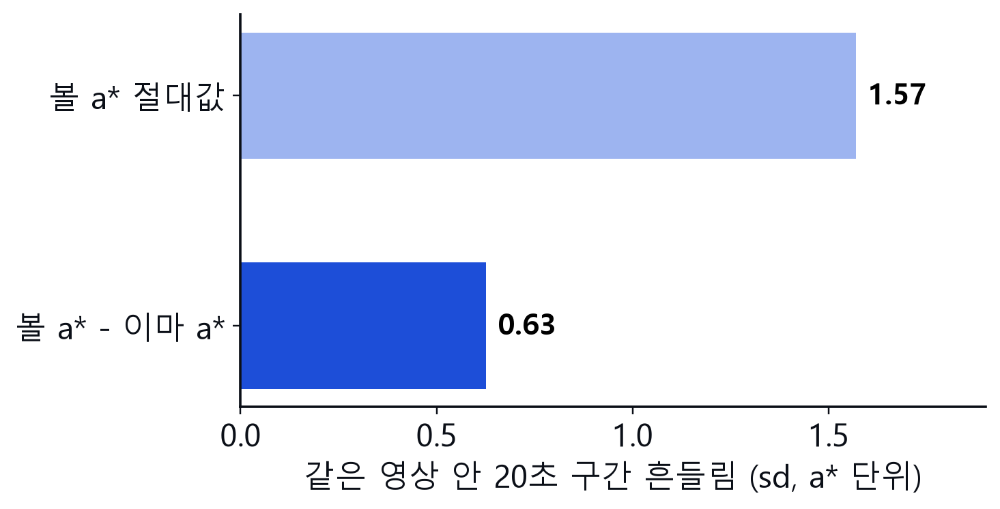
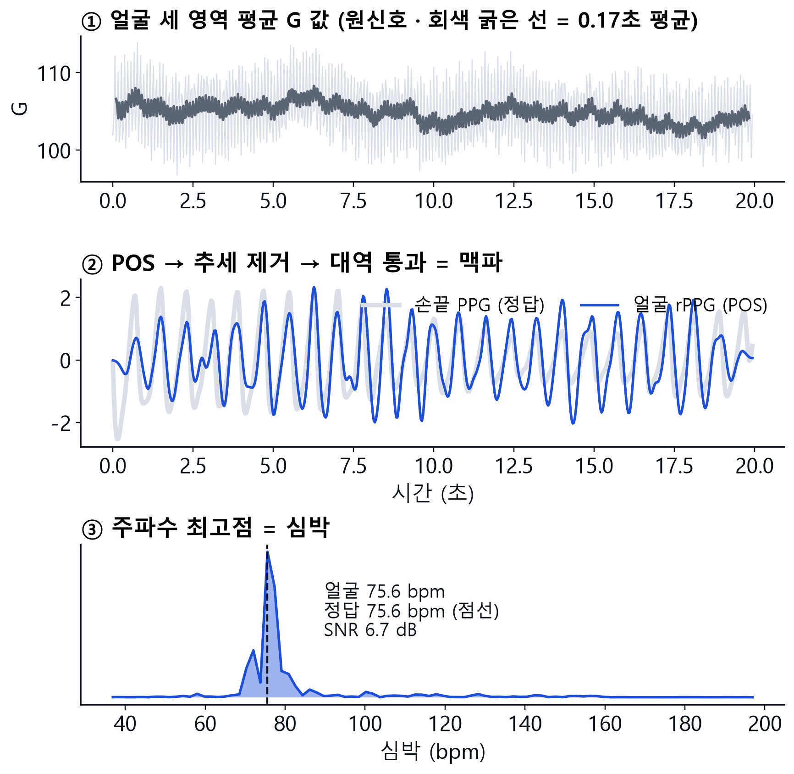
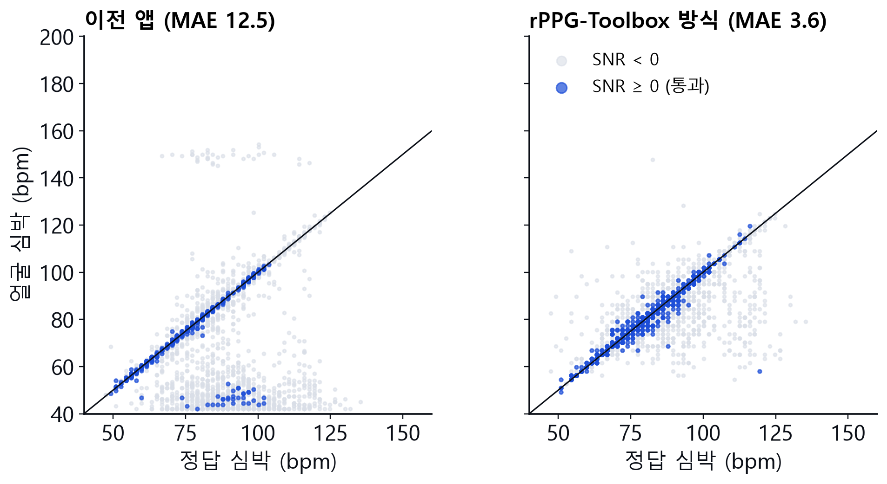
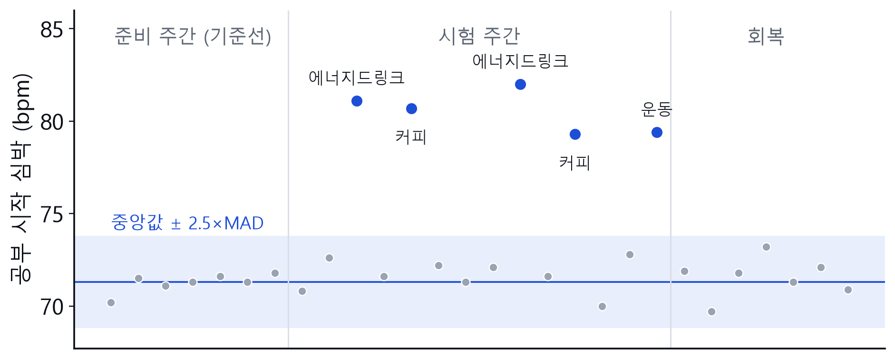
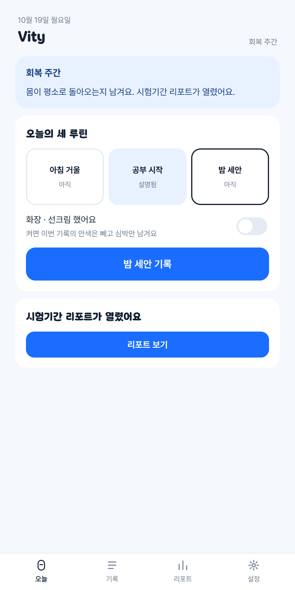
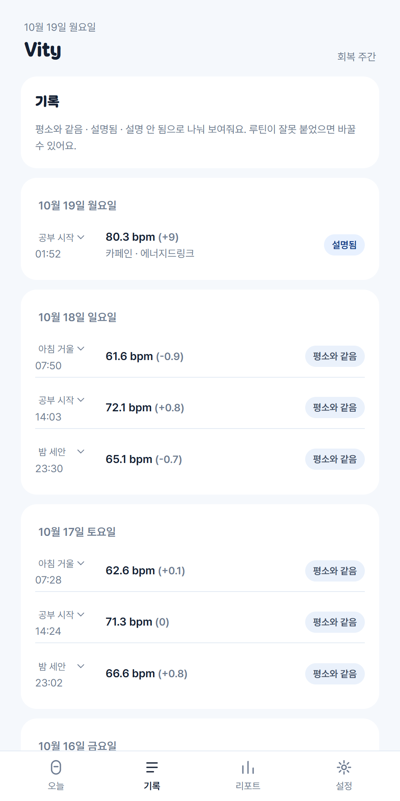
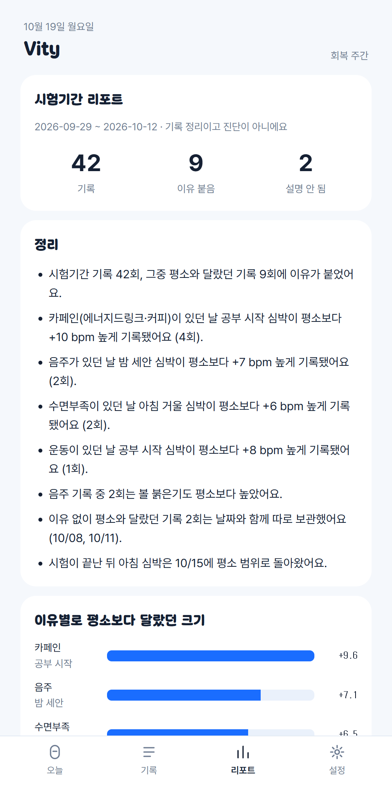

1문제: 경보보다 기록
웨어러블 이상 알림은 건강한 사람에게도 월 0.66회 헛경보를 낸다 (Mishra 2020). 심박이 평소와 다른 날은 운동 · 음주 · 카페인 · 늦잠으로 월 15회 안팎, 실제 감염은 월 0.2회 수준이다.
→ “이상”을 단정하지 않고, 달라진 순간에 이유를 한 번 물어 설명된 변화와 설명되지 않은 변화를 나눠 기록한다. 워치 없이 폰 전면 카메라 하나로.
2측정을 어떻게 시작하나
| 루틴 | 트리거 | 질문 |
|---|---|---|
| 아침 거울 | 기상 알람 해제 → 단축어 | 어젯밤 뭐 했어요? |
| 공부 시작 | 집중 모드 켜기 · 책상 NFC | 방금 뭐 마셨어요? |
| 밤 세안 | 세면대 NFC 스티커 | 오늘 하루 어땠어요? |
iOS 는 앱이 스스로 카메라를 켤 수 없어 사용자 행동에 붙인 URL 호출로 연다. 루틴은 호출값 우선, 없으면 시각(4–11시 아침 · 11–20시 공부 · 그 외 밤). 기록 탭에서 바꾸면 재판정.
3얼굴 영역 추적 · 품질
MediaPipe Face Landmarker (Apache-2.0, 브라우저 WASM · GPU): 메시 478점 + 표정 계수 52종 + 머리 자세. ARKit 과 같은 역할.
매 프레임 메시 번호로 세 영역 볼록 다각형을 만들고 그 안 픽셀의 평균 RGB 만 남긴다.
이마 151·108·337·69·299·109·338
왼볼 116–119·100·36·205·187·123
오른볼 345–348·329·266·425·411·352
품질 판정 (하나라도 걸리면 ‘다시 보기’)
품질 미달 기록은 판정 · 베이스라인 모두에서 빠진다. 두 번 실패하면 ‘이번엔 건너뛰기’.
4안색 지수: 이마 대비 볼 붉은기
arel = mediant( a*볼(t) − a*이마(t) )
같은 프레임 안의 차이 → 조명 · 노출 변화가 상쇄된다

MCD-rPPG 60명 · 20초 구간 961개. 상대값이 측정 잡음 2.5배↓, 밝기 추종 ρ −0.16 → 0.08.
단, 운동 후 붉어짐의 방향은 일관되지 않았다 (52%, p = 0.30). 그래서 안색은 판정을 바꾸지 않는 보조 기록이고, 화장 · 선크림 토글이 켜지면 빠진다.
5얼굴로 맥박 재기 — rPPG (POS)
심장이 뛸 때마다 피부 혈액량이 변해 녹색 빛 흡수가 0.1–0.5% 흔들린다. 카메라 RGB 평균에서 이 흔들림만 골라낸다. 처리 순서는 rPPG-Toolbox(Liu 2023)와 같게, 코드는 직접 작성(라이선스 RAIL).
- 재표본 세 영역 평균 RGB 를 30 Hz 로 보간
- POS (Wang 2017) 1.6초 창마다 Cn = C / μ(C),
S =[[0, 1, −1], [−2, 1, 1]]·Cn, h = S₁ + (σS₁/σS₂)·S₂ → 겹쳐 더하기
피부색 방향과 직교하는 평면에 투영 → 조명 세기 · 반사광 성분을 제거 - 추세 제거 smoothness priors: x − (I + λ²DᵀD)⁻¹x, λ = 100
- 대역 통과 1차 Butterworth 0.75–3 Hz, filtfilt (위상 0)
- 심박 다시 추세 제거 · 0.6–3.3 Hz 통과 → FFT(2⌈log₂n⌉) 최고점 × 60
- SNR = 10·log₁₀( 1·2차 고조파 ±6 bpm 에너지 / 나머지 )

MCD-rPPG 1명, 20초. 얼굴에서 뽑은 맥파(파랑)가 손끝 PPG(회색)와 박자를 맞춘다 → 75.6 bpm 일치.
브라우저 rppg2.js 와 Python rppg.py 가 같은 입력에서 소수점 8자리까지 일치 (단위 테스트로 고정).
6정확도 검증 (공개 데이터 MCD-rPPG)
100명 · 운동 전후 영상 · 손끝 PPG 정답 · 20초 창 3,201개.

| 이전 앱 (v1) | rPPG-Toolbox 방식 (v2) | |
|---|---|---|
| 평균 오차 | 12.5 bpm | 3.6 bpm |
| ±5 bpm 안 | 68% | 80% |
| SNR ≥ 0 통과율 | 18% | 44% |
| 통과 창 오차 | 3.1 bpm | 0.7 bpm |
SNR 문턱은 남는 측정과 오차를 맞바꾼다. 앱은 0 dB 를 쓰고, 미달이면 이유를 묻지 않고 다시 찍게 한다 — 틀린 심박으로 질문하지 않기 위해.
7루틴별 개인 베이스라인 · 판정
med = 중앙값, s = max( 1.4826 · MAD, 1 bpm )
|x − med| ≥ k · s → 다름 (k = 2.5, 설정 2 / 2.5 / 3)

시연 기록 · 공부 시작 루틴. 띠 안은 조용히 저장, 띠 밖(파랑)은 이유를 물었다.
- 아침 · 공부 · 밤을 섞지 않는다 — 섞으면 앉은 직후 심박은 매번 ‘상승’
- 시험 주간 기록은 기준에 넣지 않는다 — 넣으면 변화가 기준에 묻힌다
- 중앙값 · MAD → 하루 이상치에 기준이 끌려가지 않는다
8알림은 경보가 아니라 질문

평소와 달라요
공부 시작 · +9 bpm방금 뭐 마셨어요?


리포트 문장은 수치 요약에서 규칙으로 만든다: “카페인이 있던 날 공부 시작 심박이 평소보다 +10 bpm (4회)”, “이유 없이 달랐던 기록 2회(10/08, 10/11)”, “아침 심박은 10/15 에 평소 범위로”. ‘진단 · 위험 · 무리하지’ 같은 표현은 테스트로 금지.
9개인정보 · 한계 · 다음
개인정보
- 영상 · 메시 · 픽셀은 브라우저 밖으로 안 나감
- 저장: 심박 · SNR · 안색 숫자 · 품질 · 루틴 · 시각 · 응답
- 첫 화면 동의(카메라 혈류 분석 명시, 개인정보보호법 제23조 민감정보) · 전체 삭제
한계 → 다음
- 실기기 · 실조명 오차 미측정 → 팀원 2주 운용
- k 값 → 헛 ‘달라요’ 비율로 결정
- 음주 붉어짐 공개 데이터 없음 → 음주 전후 자기 촬영
- 웹 → iOS 앱(ARKit · Face ID 잠금)